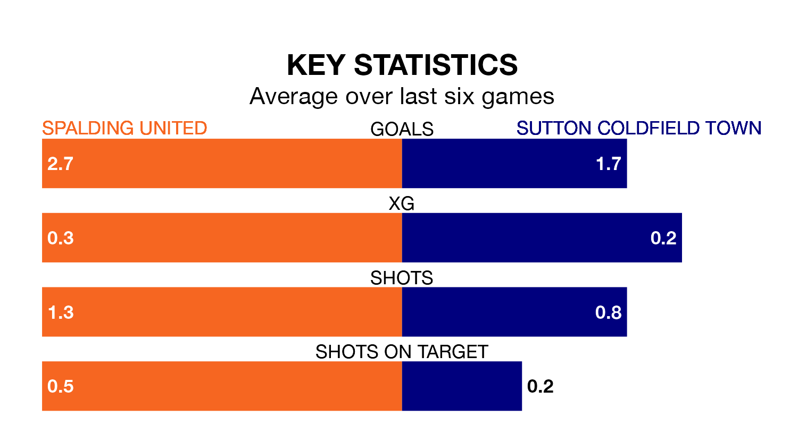

Spalding United are on an excellent run ahead of hosting Sutton Coldfield Town at Sir Halley Stewart Field on Saturday, with 16 points collected from their last six games.
Spalding have picked up five wins and one draw in their last six Northern Premier League Division One – Midlands games, and face a Sutton Coldfield side whose last six games have brought three wins and three losses.
With 77 goals in 34 games so far this season, Spalding are the league's highest scorers with 2.3 goals per game. And they are conceding fewer than average, letting in 32 goals at a rate of 0.9 per game.
Sutton Coldfield, meanwhile, are average scorers, with 1.6 goals per game. They have conceded 1.5 goals per game.
United are top of the table after 34 games, of which they have won 24 and drawn five, earning 77 points.
Town are 10 places behind the hosts in 11th, with 14 wins and six draws putting them on 48 points.
In the last 10 years, Spalding and Sutton Coldfield have played each other on six occasions. Spalding won three of them and they drew three times.
On average, Spalding scored 1.5 goals and Sutton Coldfield 0.7 in those matches.
Their last meeting was on November 4, when they played out a 2-2 draw.
Spalding's last match was on April 6, a 2-1 win against Quorn.
Sutton Coldfield lost 1-0 against Corby Town last time out, also on April 6.
Updated: 10:01 (UTC), 12/04/24